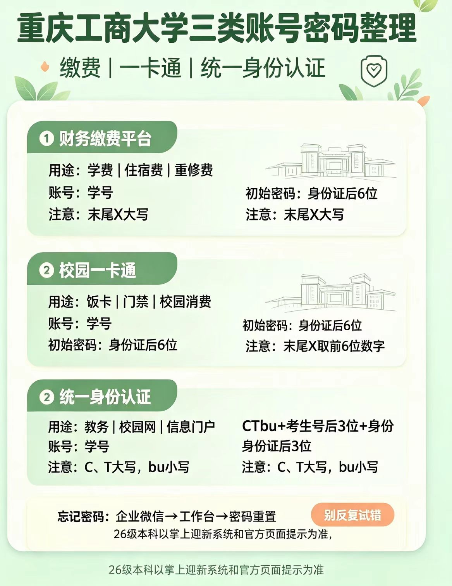

报到前后，你会反复用到这三套账号：交学费和住宿费、刷饭卡/门禁、登录教务和校园网。它们的账号都是学号，但初始密码规则不一样，放一起对比看最不容易搞混。

学姐提醒：末尾带 X 的同学特别注意：财务缴费平台是身份证后 6 位且 X 大写；一卡通是身份证后 6 位但只取前 6 位数字。如果都试不对，别反复试错锁账号，直接走企业微信 → 工作台 → 密码重置。26 级本科最终以掌上迎新系统和学校官方页面提示为准。
大一入学最容易卡住的三个密码：缴费平台、一卡通、统一身份认证。账号都是学号，但初始密码规则各不相同，一次帮你理清楚。
报到前后，你会反复用到这三套账号：交学费和住宿费、刷饭卡/门禁、登录教务和校园网。它们的账号都是学号，但初始密码规则不一样，放一起对比看最不容易搞混。
